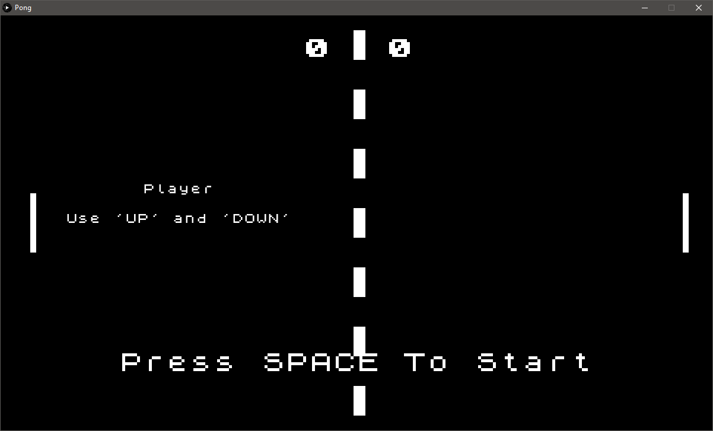
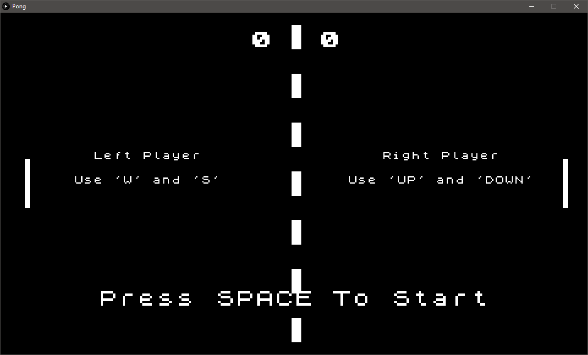
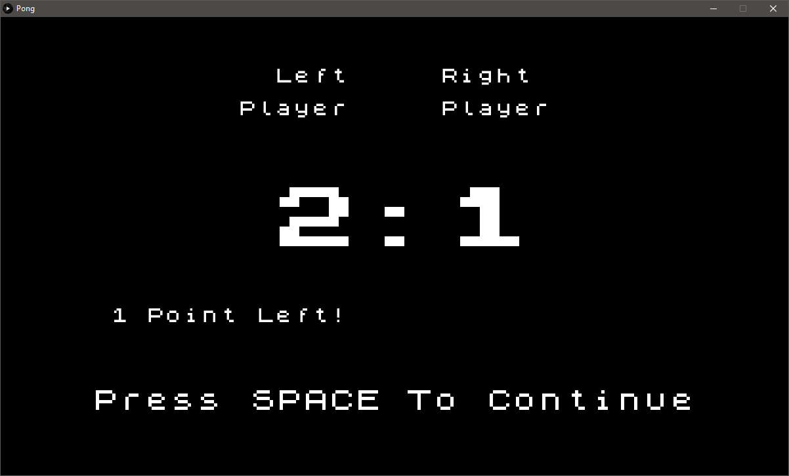
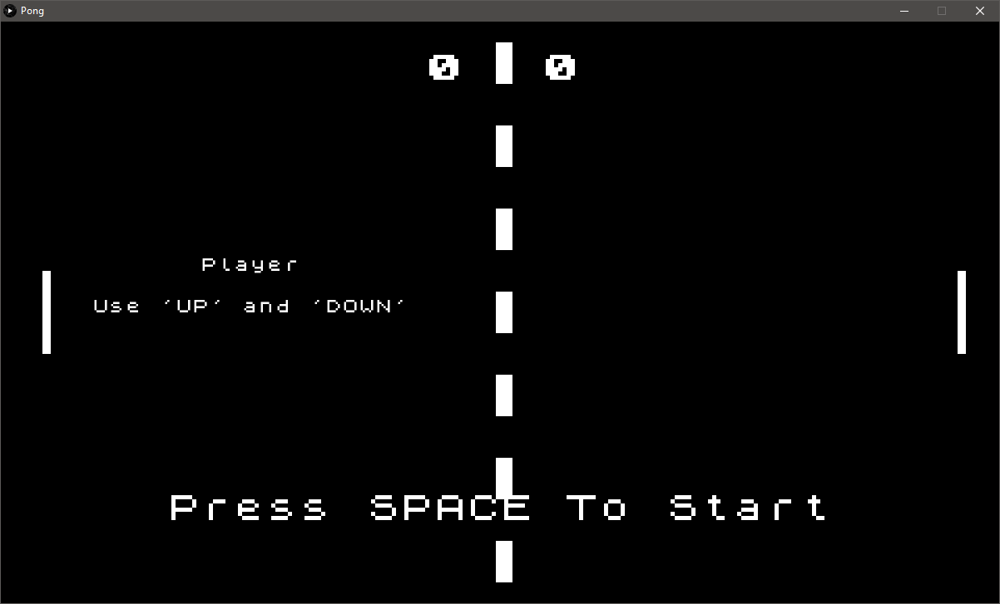
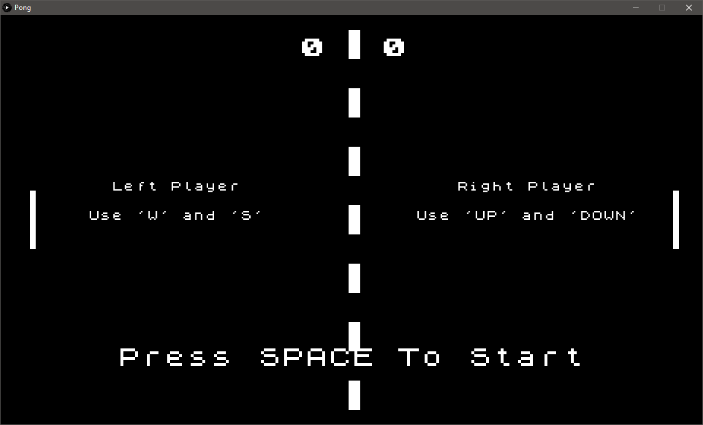
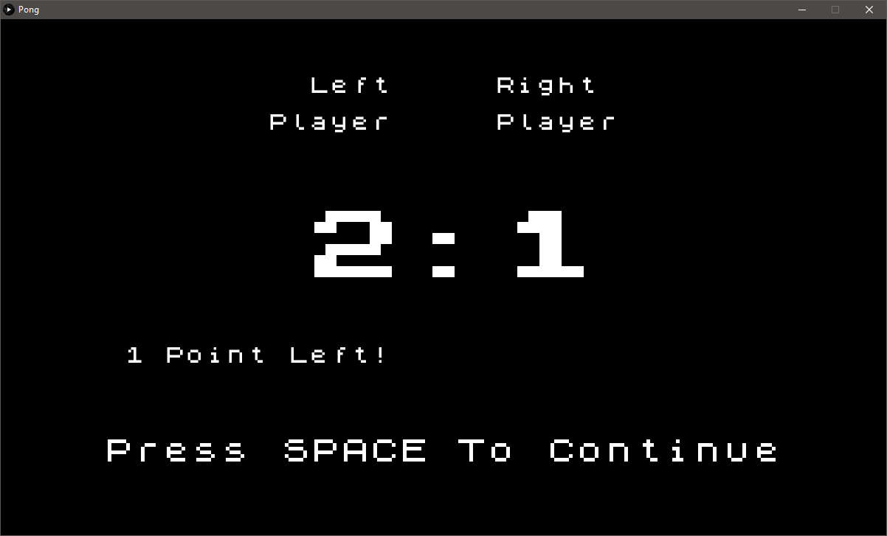

Paulius KANCLERIS
I was born in Lithuania but have lived in England since I was 4. My hobbies include gaming, basketball, badminton and swimming, although I not longer play badminton or swim very often. My coding experience prior to Bootcamp was very minimal. In 6th Form, I completed an ICT BTEC course which included making a game using GameMaker, and creating a questionnaire using VBScript. However, this was cut short due to the pandemic. I have also messed about with html before but have never had set tasks to complete.

Bootcamp 2020: Pong
This is my first programming project, concluding the 2 week Programming Bootcamp at City (2020). Using Processing, I have demonstrated a comprehensive understanding of the use of 'if' statements and classes. I have also shown some understanding of how randomness can be used and how physics principles can be recreated. I began by creating the class that will be used when the game starts. This consisted of the ball having to move, bounce off the paddles and the walls, and the movement of the paddles. I then proceeded by creating the main menu and the screens once someone has won. I then decided to create an additional gamemode where 1 player is able to play against the computer. This resulted in me having to create a screen to select the number of players and a screen for the computer winning. My final addition was having the player select between 3 difficulties when they play against the computer. This is where I used randomness to determine how accurate the computer was at hitting the ball back. The final steps were to add sound to make the game more interesting to play.
Check out the code on Github.

 




